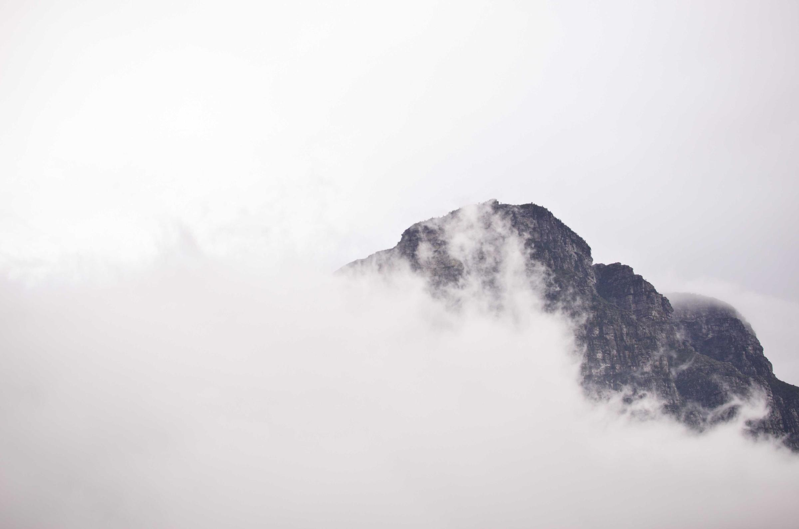
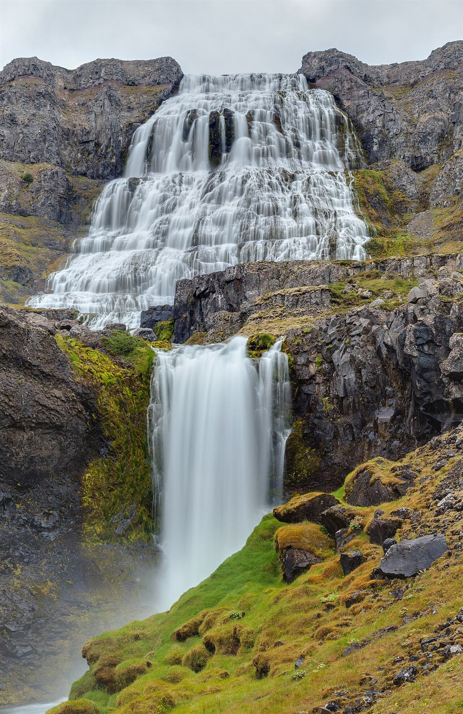

Mountain guides for the Bergell
Six certified guides take one to four people up the granite of the Bergell, June to October. A day with a guide from CHF 590; the Badile north ridge in two days from CHF 1,180.
- Guides
- Six, IFMGA certified
- Season
- 20 June to 10 October
- Group
- One to four people
- Meet
- Vicosoprano, 6:00
The way up. A marked path, no glacier, about 1,250 metres of climb.
- Vicosoprano, post bus stop1,067 m
Follow the white and red marks past the church and over the bridge.
- Alp Furcela1 h 40
Water and a bench by the cheese hut; the forest ends here.
- The waterfall steps2 h 45
Chains on the wet slabs; turn back here in a thunderstorm.
- Sasc Furä hut2,340 m
The night before the ridge; dinner at 18:30, away at 4:00.
